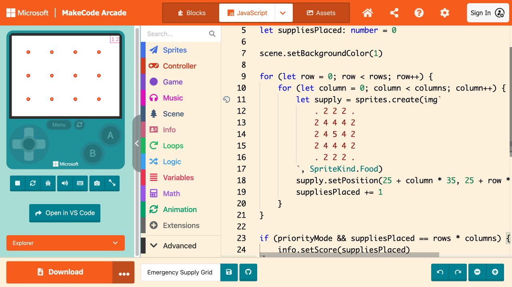

TEXT-CODE BRIDGE · DAY 1
Lesson 3: Text Code — Trace, Predict + Repair
Emergency Supply Grid · MakeCode Arcade JavaScript
Daily Learning Contract
Objective: Students will trace a text program, predict nested-loop results, identify named variable types and operations, and repair one loop bug from evidence.
TEKS:
- §126.19(c)(1)(A) — decompose real-world problems into structured parts using pseudocode;
- §126.19(c)(1)(B) — analyze the patterns and sequences found in pseudocode and identify its variables;
- §126.19(c)(1)(E) — develop, compare, and improve algorithms for a specific task to solve a problem; and
- §126.19(c)(1)(F) — analyze the benefits of using iteration (code and sequence repetition) in algorithms.
- §126.19(c)(2)(A) — construct named variables with multiple data types and perform operations on their values;
- §126.19(c)(2)(B) — use a software design process to create text-based programs with nested loops that address different subproblems within a real-world context; and
- §126.19(c)(2)(C) — modify and implement previously written code to develop improved programs.
Demonstration of learning: Passport trace table, before/after screenshots, corrected JavaScript, and a nested-loop explanation.
Open the tools and files
Open MakeCode Arcade · Bug Challenge starter code
- English: Make a Google copy · Word · PDF
- Español: Crear una copia de Google · Word · PDF
English
- Open a new MakeCode Arcade project, name it Emergency Supply Grid, and select JavaScript.
- Open the Bug Challenge text file. Copy all of the code into the JavaScript editor.
- On Passport Checkpoint 4, identify missionName, rows/columns, priorityMode, and suppliesPlaced. Record each type, purpose, and predicted value.
- Predict a 3 × 4 grid and 12 supplies. Run the code. Capture the 3 × 3 result and score 9 before repairing it.
- Find the inner-loop condition that uses the wrong boundary. Change one word, run again, and capture the corrected 3 × 4 grid and score 12.
- Explain why the inner loop is the column subproblem and the outer loop is the row subproblem.
Español
- Abre un proyecto nuevo de MakeCode Arcade, nómbralo Emergency Supply Grid y selecciona JavaScript.
- Abre el archivo Bug Challenge y copia todo el código en el editor.
- En el Punto de control 4, identifica missionName, rows/columns, priorityMode y suppliesPlaced. Registra tipo, propósito y valor previsto.
- Predice una cuadrícula de 3 × 4 y 12 suministros. Ejecuta el código. Captura el resultado de 3 × 3 y la puntuación 9 antes de repararlo.
- Encuentra la condición del bucle interior que usa el límite equivocado. Cambia una palabra, ejecuta otra vez y captura 3 × 4 con puntuación 12.
- Explica por qué el bucle interior resuelve columnas y el exterior resuelve filas.

Turn in / Entrega
Passport trace table, before/after screenshots, corrected JavaScript, and a nested-loop explanation. Upload screenshots or files through this assignment. Do not submit your school password, personal email, or a public profile.